Префектура Нагасаки · Омура · архитектура
Библиотека «Мирай он» в Омуре: книжный док под деревянной волной
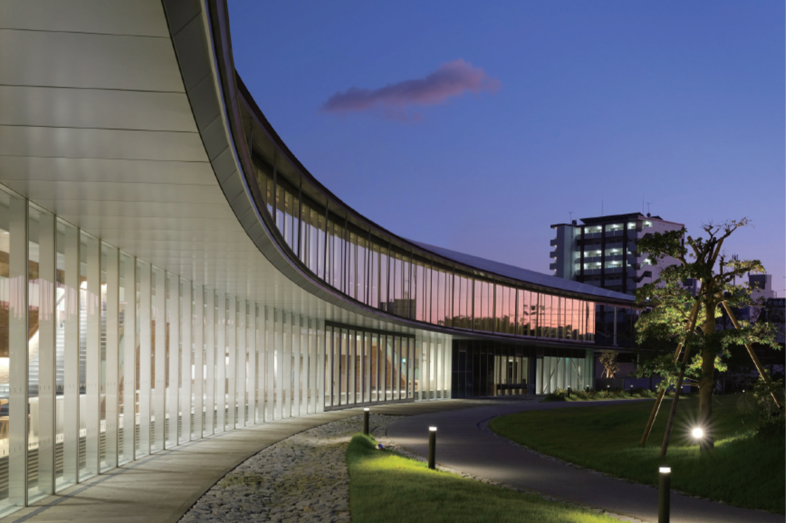
Омура, город у залива с тем же названием, встречает почти всех, кто прилетает в префектуру Нагасаки: здесь находится аэропорт. В 2019 году в городе открылась библиотека «Мирай он», и ради её здания сюда стоит заехать, даже если вы не собирались читать.
Библиотека
Два миллиона книг под одной крышей
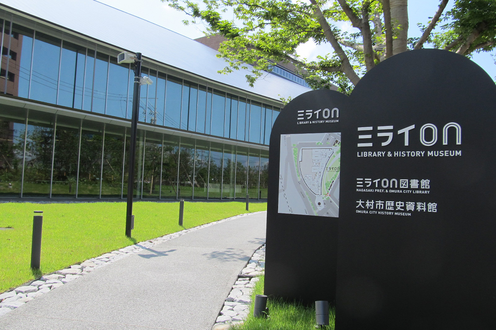
Библиотека «Мирай он» открылась в октябре 2019 года. Под одной крышей объединились городская библиотека Омуры и префектуральная библиотека Нагасаки, и управляют ими префектура и город вместе. В Японии такая схема встречается редко: до этого префектура и город делили одну библиотеку только в Коти на острове Сикоку.
В хранилищах помещается около 2,02 млн книг. Среди всех префектуральных библиотек страны это шестой результат, а на острове Кюсю одна из самых больших.
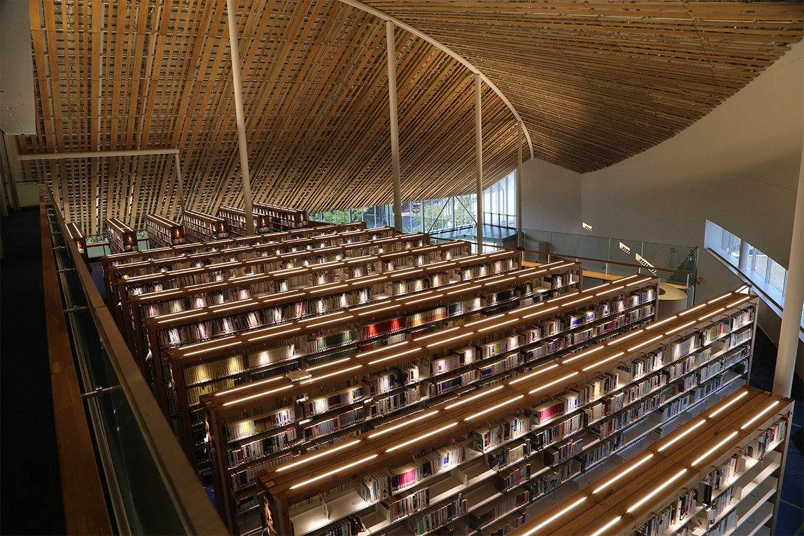
Название выбрали из 1500 с лишним вариантов, присланных со всей Японии. «Мирай» по-японски значит «будущее», а «он» читается как английское слово: здесь хотели сделать место, где человек узнаёт о настоящем и будущем и как будто включает в себе переключатель. Кроме того, буквы «о» и «н» это первые буквы слов Omura и Nagasaki, так что имя подошло зданию, которое город и префектура строили вместе.
Архитектура
Здание в форме залива
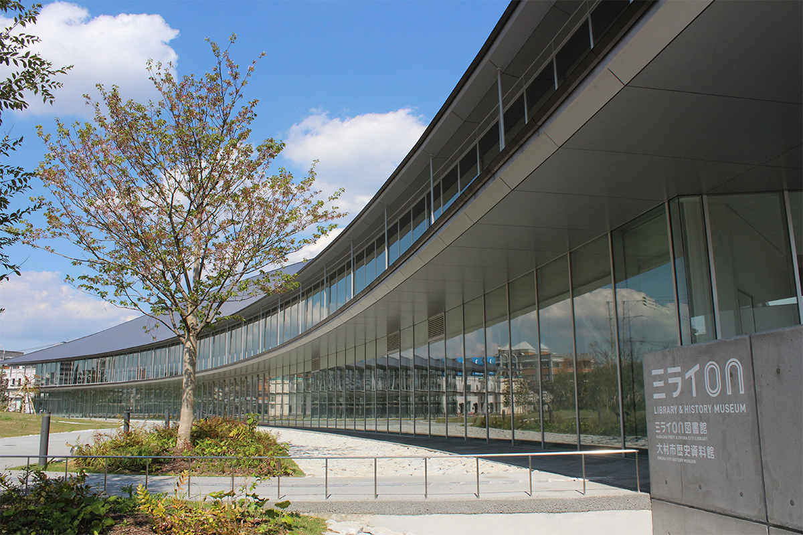
Главное, что запоминается в «Мирай он», это изогнутое здание. Его спроектировали вместе два бюро: INTERMEDIA из Нагасаки, которое построило в префектуре детский сад и международный морской терминал в порту Нагасаки, и токийское AXS Satow, автор многих общественных зданий по всей стране.
Библиотека стоит на пологом склоне, обращённом к заливу Омура, а за ней поднимается гора Тара. Архитекторы хотели связать природу вокруг с центром города и придали зданию форму залива, который как будто втягивает в себя поток людей с улиц.
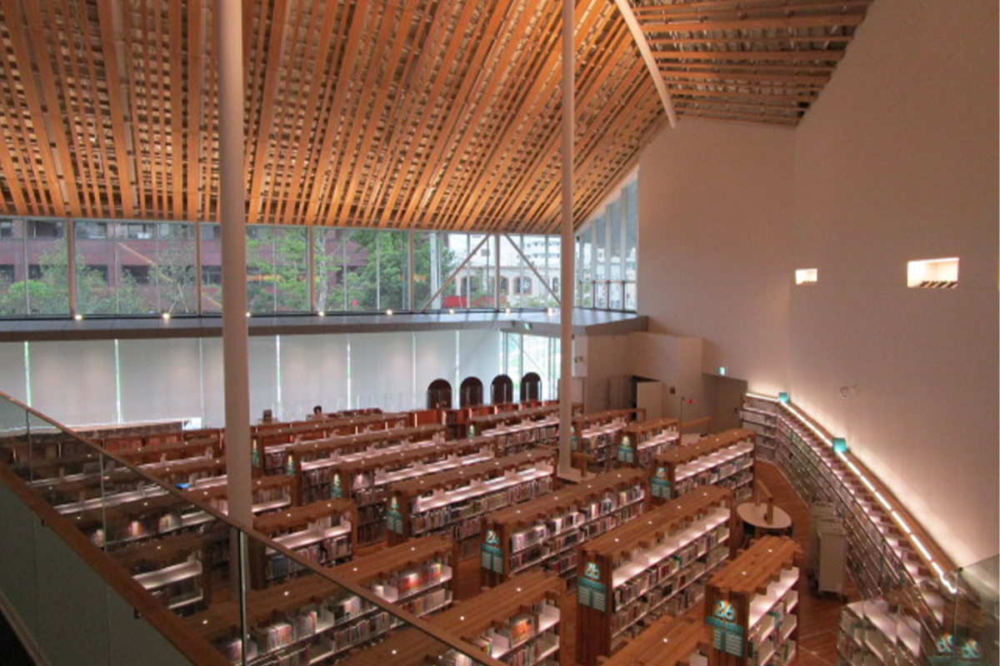
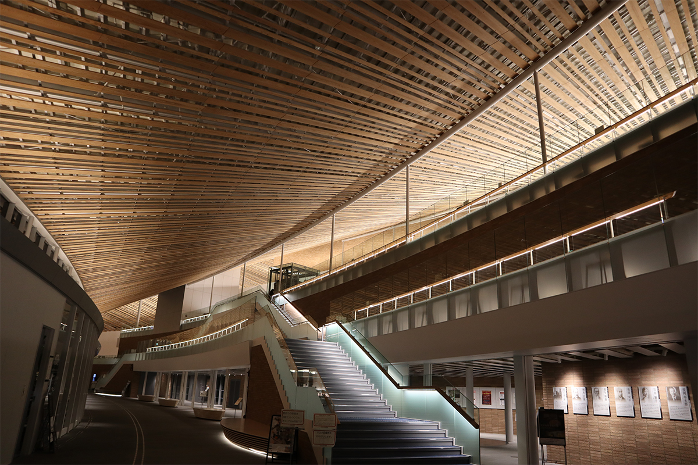
Внутри с первого по четвёртый этаж открывается огромное пространство со вторым светом. В Нагасаки давно строят корабли, и этот объём задуман как сухой док верфи. «Книжный док» проходит через все этажи: в нём собраны служебные помещения и закрытые хранилища, и отсюда, как из машинного отделения, работает вся библиотека.
Вокруг дока ступенями спускается читальное пространство, которое называют «книжной клумбой». Стеллажи, отдельные столы для занятий и читальные залы расставлены на ярусах, как цветы на клумбе. Под одной изогнутой крышей док и клумба сливаются, и то, чем заняты люди в библиотеке, плавно переходит в пейзаж за окнами.
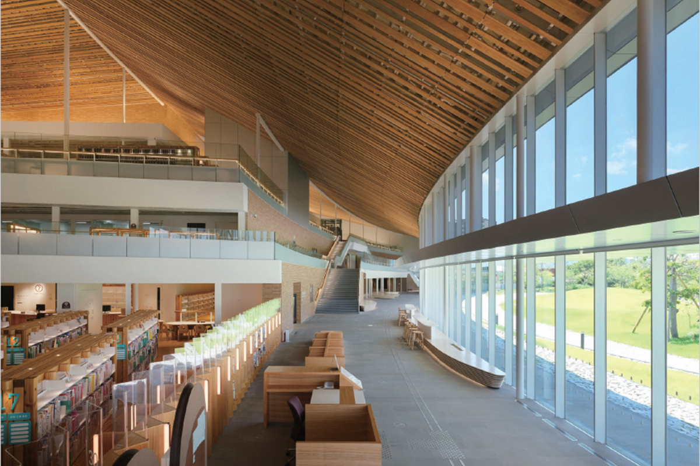
Внутри
Синий ковёр, лужайка и кафе
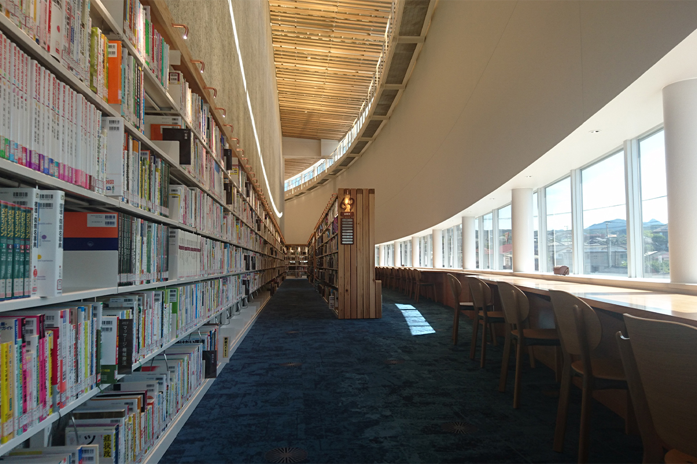
По всему залу открытого доступа расставлены места для чтения, и найти угол по настроению несложно. Ковёр в зале синий, и это не случайный выбор.
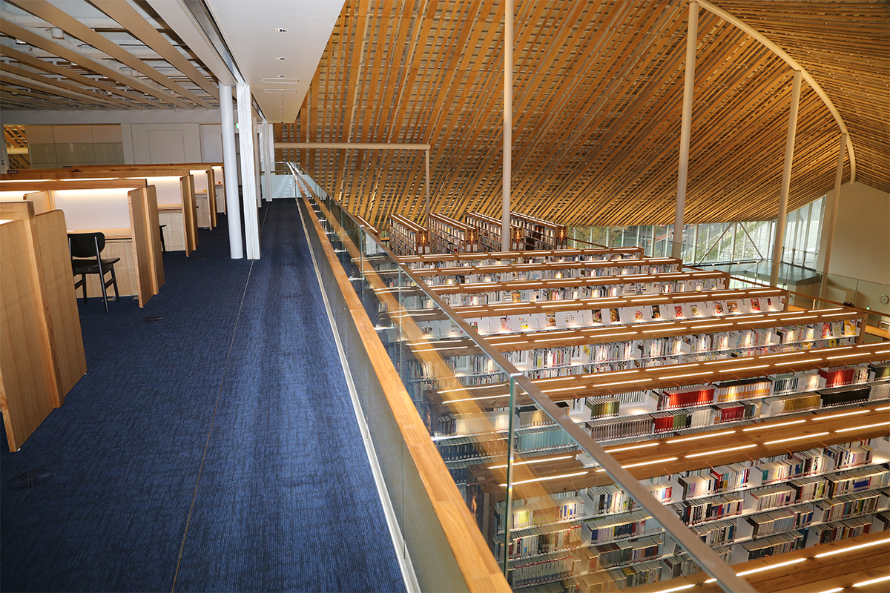
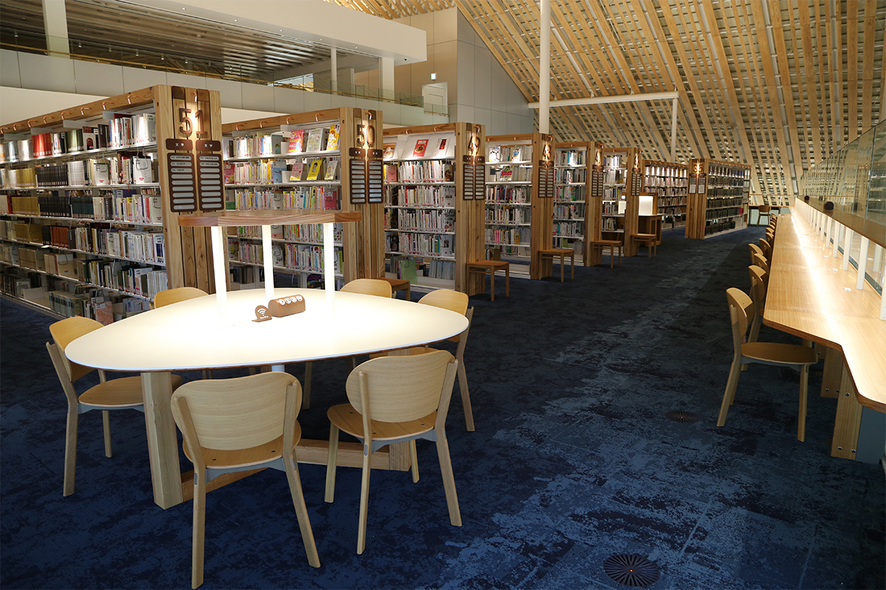
Кроме того, здесь есть многоцелевой зал на 200 человек, детская комната с 40 000 книг в открытом доступе и материалы по истории Омуры и людям, связанным с городом.
Когда глаза устанут от страниц, можно выйти на лужайку. Здесь круглый год что-нибудь цветёт, на траве играют дети и обедают те, кто взял с собой еду.
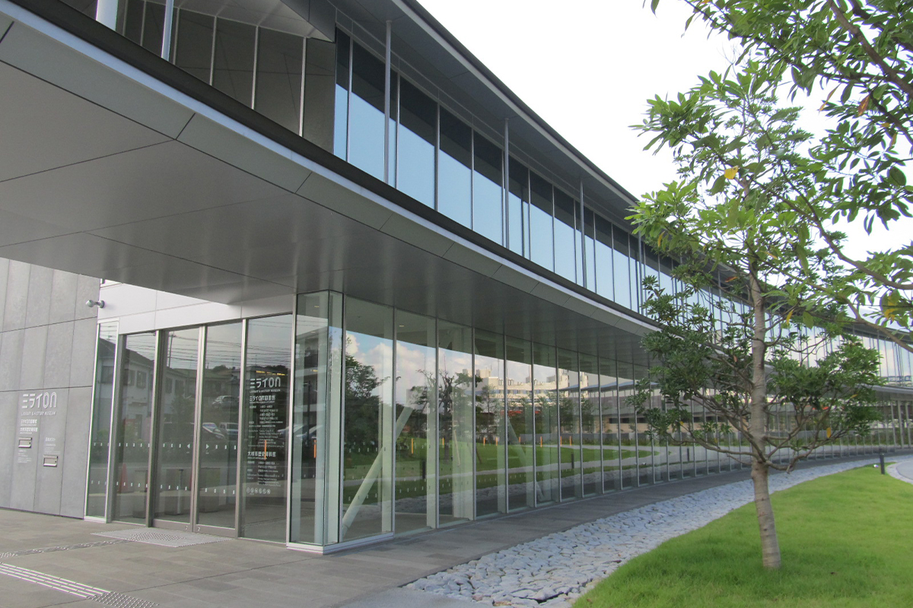
В кафе cafe miraino из окон видна зелень снаружи, а в меню блюда из местных продуктов, домашняя выпечка и напитки. Фирменный бутерброд «Нагасаки саба-сандо» делают со скумбрией, выловленной у берегов Нагасаки, и в 2022 году он стоил 530 иен.
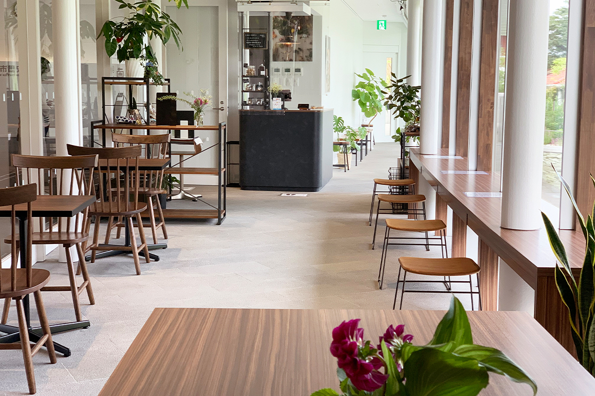
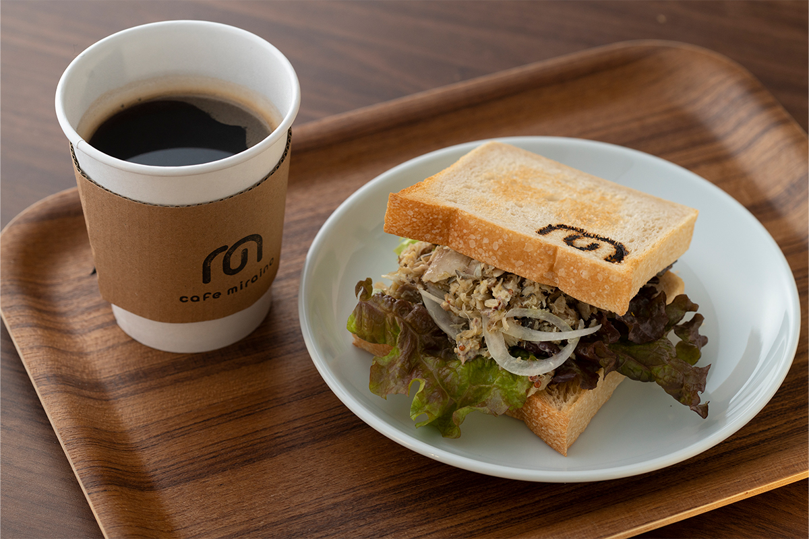
От аэропорта Нагасаки и станции Омура до библиотеки совсем недалеко, поэтому сюда удобно заехать и путешественнику: здесь легко найти информацию о префектуре. В стильном здании много продуманных мелочей, и они сами по себе дают пищу для идей.
Библиотека «Мирай он»
- Адрес
- префектура Нагасаки, Омура, Хигаси-Хоммати, 481
- Телефон
- +81 957-48-7700
- Часы работы
- будни 10:00–20:00, выходные и праздники 10:00–18:00
- Как добраться
- около 3 минут пешком от станции Омура линии JR Омура; на машине около 8 минут от развязки Омура и около 11 минут от аэропорта Нагасаки; на скоростном шаттле префектуральной автобусной компании около 45 минут до остановки «Мирай он»